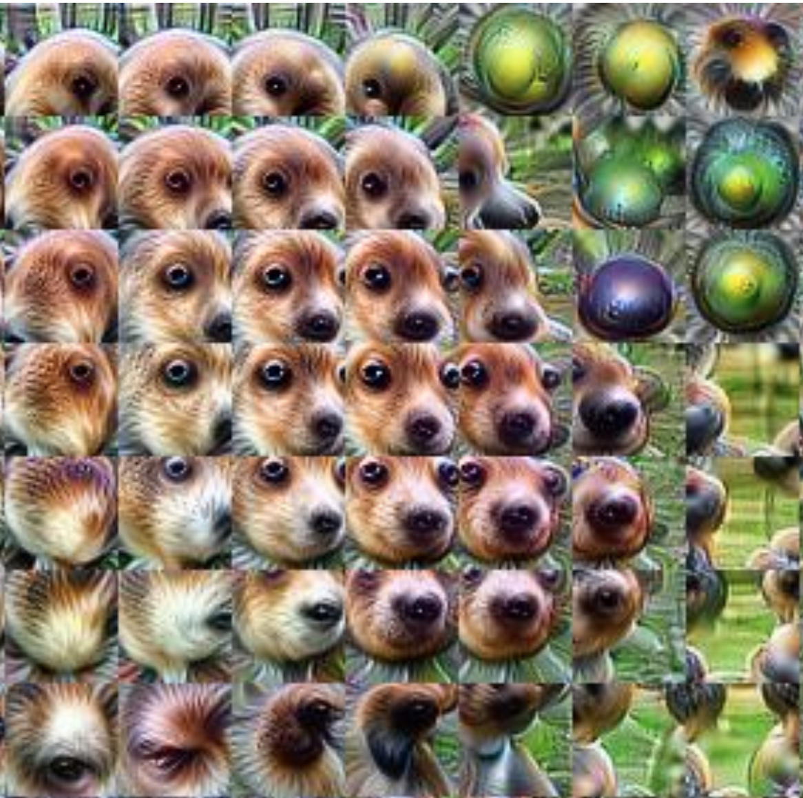
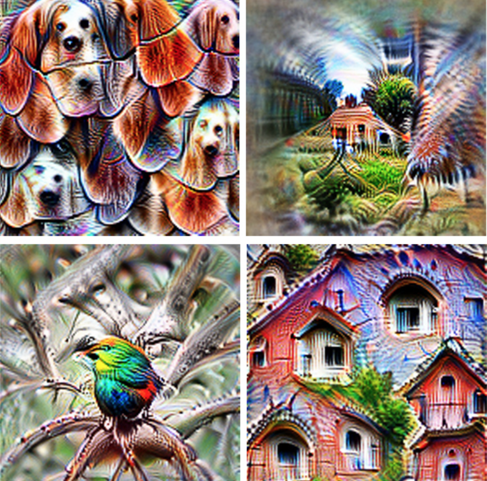
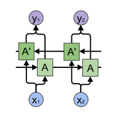
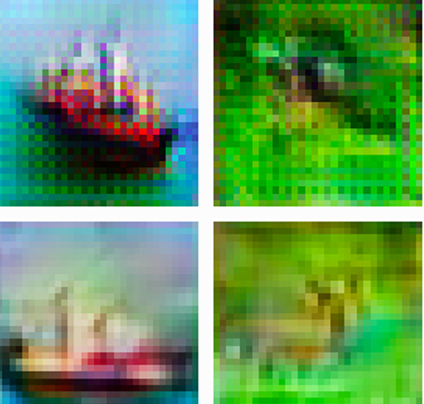
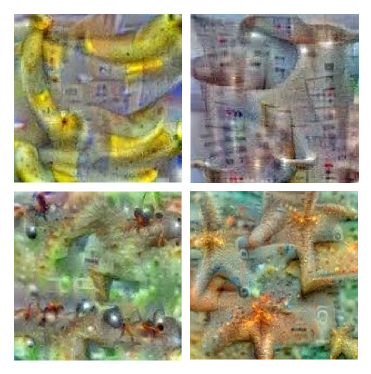
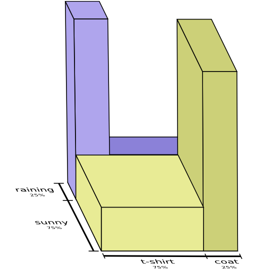
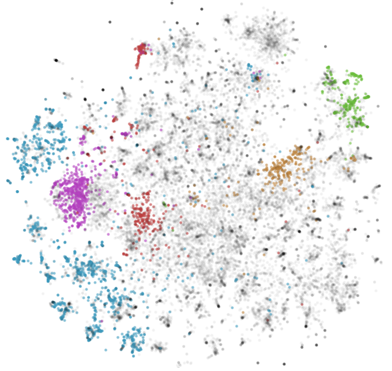
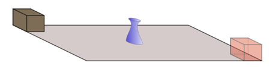
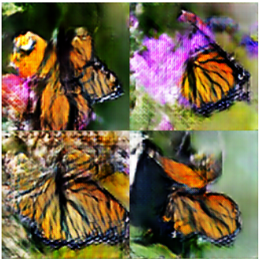

Recent Exciting Things!


Feature Visualization
How neural networks build up their understanding of images
On Distill
Research Debt
On Distill
Neural Networks (General)

Neural Networks, Manifolds, and Topology

Deep Learning, NLP, and Representations

Calculus on Computational Graphs: Backpropagation

Neural Networks, Types, and Functional Programming
Recurrent Neural Networks

Understanding LSTM Networks

Attention and Augmented Recurrent Neural Networks
On Distill
Convolutional Neural Networks

Conv Nets
A Modular Perspective

Understanding Convolutions

Groups & Group Convolutions

Deconvolution and Checkerboard Artifacts
On Distill
Visualizing Neural Networks

Visualizing MNIST
An Exploration of Dimensionality Reduction

Visualizing Representations
Deep Learning and Human Beings

Inceptionism
Going Deeper into Neural Networks
On the Google Research Blog

Four Experiments in Handwriting with a Neural Network
On Distill
Feature Visualization
How neural networks build up their understanding of images
On Distill
The Building Blocks of Interpretability
On Distill
Miscellaneous

Fanfiction, Graphs, and PageRank

Data.List Recursion Illustrated

Visual Information Theory
Non-Technical Commentary
Research Debt
On Distill
Traditional Papers

Document embedding with paragraph vectors
On ArXiv [PDF]
TensorFlow: Large-scale machine learning on heterogeneous systems
On TensorFlow.org [PDF]

Concrete Problems in
Concrete Problems in
AI Safety
On ArXiv [PDF]
